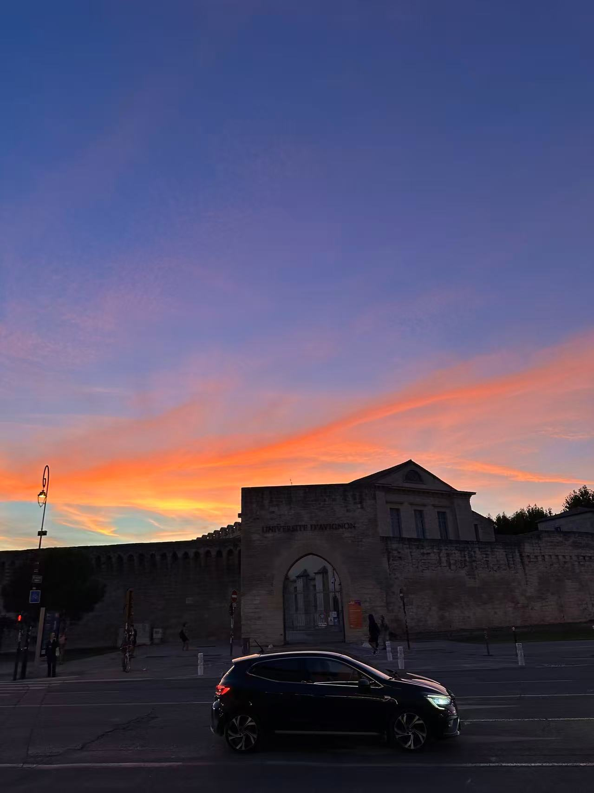

FEATURED STORIES
Faces of the South
Portraits of Marseille’s youth — raw, vibrant, alive.

Graffiti as Identity
Art, rebellion, and belonging through urban paint.

Urban Fashion
How Marseille mixes streetwear and French chic.